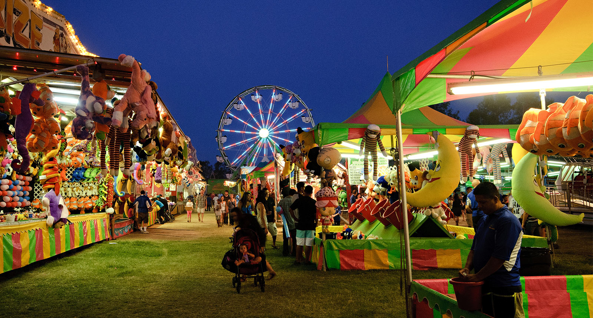
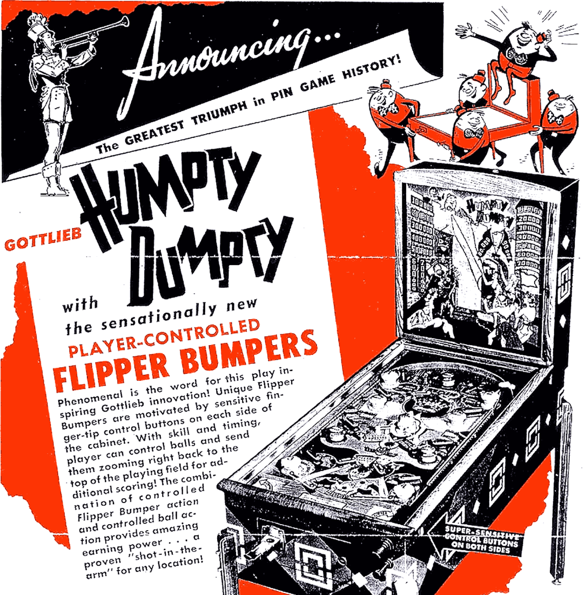
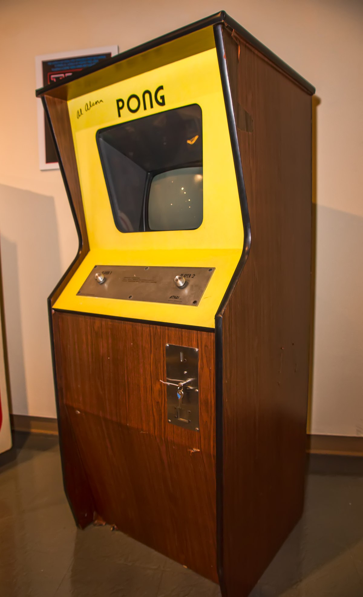
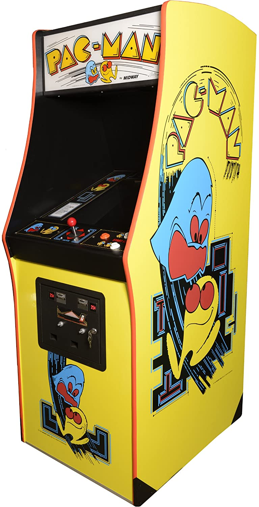
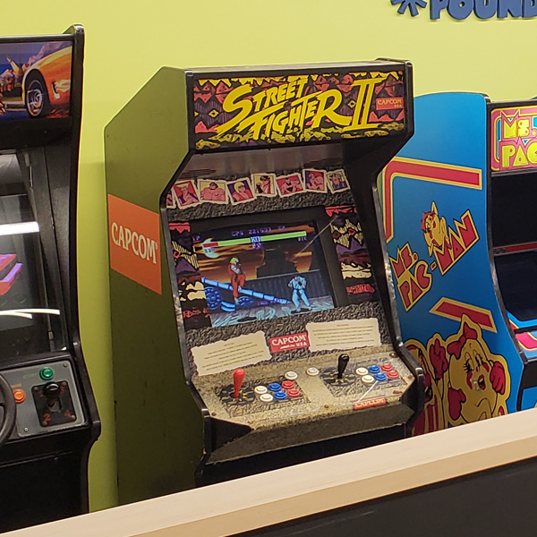

Tech: Now and Then

April 4th, 2021
Some arcade cabinets, the mainstay of most American arcades.
Arcades, while mostly gone nowadays, were an amazing place to hang out and try fun games for only a "small" price. Many people were shocked by the ability that a little arcade cabinet could have, as they were a major money-making business that every child was enamored by. They were everywhere, even in restaurants, bars, and maybe even offices. But where did these all start? What does the term "arcade" even mean? And how did they take over the nation, only to dwindle into obscurity? Well, that all starts around the 1900's.
An image of a carnival/midway, the initial inspiration for arcades.
First off, the term "arcade" means a building with many arches. These kinds of buildings usually housed many shops in a place, like our shopping malls nowadays. Although, to get the idea for their creation, we'd go back to the carnivals of the 1900's. These places often tried to get people to play games in exchange for some money to possibly win a prize. These games were games of skill, making people constantly want to try them over and over to try to win. Once the coin-operated machine was invented and people were willing to use these devices, manufacturers realized that they could charge people for games without having a person being there.
An image of the Humpty Dumpty pinball machine, which advertised its controlled flippers.
With this breakthrough in thought and machinery, the first successful coin-operated machine was the "Baffle Ball". Baffle Ball was a simple pinball machine that had practically no user input beside launching the balls into the machine with the plunger. It's similar to Pachinko, in which the user would launch the balls to try to get them into holes for points. The machine also didn't keep track of score, meaning that the score had to be marked down by hand. With later developments of these devices, they would hand out cash prizes if you did well. Unfortunately, that made them considered gambling due to them having heavy luck being required to make them go in the proper holes. NYC mayor Fiorellaq LaGuardia then banned pinball in the aforementioned city, ordering seizures on thousands of machines in the city. On the first day of the ban, 2,000 machines were seized and stripped of their parts for the war effort. The mayor even got a photo in the newspaper with him smashing a machine! (For context, many pinball machines did have connections to organized crime.)
It later on became the cool thing to be associated with a pinball machine, as it was outlawed. Mechanical flippers were created to try to get away from the gambling image in 1947, but many still considered it illegal. Pinball machines were outfitted with a giant sign that says "For Amusement Only", but many parents still feared that it would rot their children's brain and convert them towards the Devil. Pinball machines were finally allowed to be produced in a Supreme Court ruling in 1974. NYC also allowed it in 1976, with the aid of Roger Sharpe showing them how it was a game of skill. Although, at this time, things were changing. Purely electronic entertainment was beginning to show up.
An image of a Pong cabinet, the first financially successful fully electronic arcade game.
In 1968 Utah, Nolan Bushnell, with a degree in electrical engineering and job at Ampex Corporation, wanted to do something original. He had experience in carnival games and computer games, due to him working a summer job at Lagoon Amusement Park and playing "Spacewar!" on computers during his time at the university respectively. He then joined forces with Teb Dabney, another engineer at his job, to create "Computer Space". The game didn't sell well, and ultimately failed to catch on. But, they both wanted to give it another shot. They tried to name their company Syzygy, but that was already taken. They ultimately went with a name of a move in the Chinese game Go, Atari. They also hired another young engineer, who's name was Al Alcorn.
Bushnell had seen a Magnavox demo (the first home console) that attempted to remake "Tennis for Two", one of the first computer games made on radar equipment.The game was called "Ping-Pong". The three eventually got the idea to make "Pong" from the demo, and it sold incredibly well. The six employees tasked with making the cabinets could barely keep up with the demand, and many companies rushed to copy the game. A singular Pong machine could generate up to $40 a day, and about 4,000 units were sold by 1974.A home version was made exclusively for Sears, selling about 150,000 units during the season of 1975.
By 1974, about fifteen companies were making arcade cabinets. Taito's employee Tomohiro Nisikado released "Western Gun" in Japan during 1975, which once the American version was created by Bally's Midway (Gun Fight), gave him a lot of money to really make a standout hit. Once the creation of the microprocessor was made public, he incorporated it into his next game in 1978 - "Space Invaders". It was so successful that some places in Japan were solely dedicated to having purely Space Invaders cabinets.
On a different note, these arcade games weren't outside of the realm of controversy, as the pinball machines weren't prior. With the release of "Death Race" in 1976, players would have to run down people in a car for their main objective. There was a fair amount of outrage about it, the show "60 Minutes" explored the relationship between video games and violence, and it was widely banned.
An image of a Pac-Man cabinet, the most financially successful arcade game of all time.
The video game industry was cropping up and was expanding constantly during the 1978-1982. Arcade chains began to pop up, along with the idea of home consoles so players wouldn't have to constantly pop in quarters while playing their favorite games. The arcade hit Pac-Man was released in 1980 had the largest effect on the American psyche, as it would stay a permanent mainstay in pop culture and had so much merchandise that practically anywhere you looked, you'd be struck with Pac-Man fever. The major appeal of the game was that, while most games appealed to mostly male players, Pac-Man appealed to everyone. Anyone could play Pac-Man and have a fun time, from the most casual player who had never played a game before to the most hardcore player who goes for a perfect score. Early 80's films like "E.T." and "The Wizard" showcased the boom, with American kids playing away while their parents were away. But, this all had to come to an end. After all, it couldn't last forever.
During the boom, many people were noticing that once games were complete, they would make no money and become abandoned, as most hardcore gamers wanted more of a challenge. Manufacturers started to make harder games, but this completely gated out any casual players that just wanted to play a game for fun. Games like Space Invaders completely stopped production in 1981, as people just weren't buying it anymore. It also didn't help that many were against the idea, stating that crimes like vandalism and drug use were skyrocketing without citing any statistics or evidence. US Surgeon General C. Everett Koop gave a speech that concluded with the harmful effects of video games on children, stating that they could become addicted by "body and soul". By the time he tried to change his statement, it was too late. Many parents considered video games to be toxic to children, and the video game crash happening at the time didn't help either. The most infamous example of the crash is E.T. for the Atari 2600, which after being unsold, were thrown in a landfill in New Mexico and had concrete poured over them. Video games were being sold left and right, with no real quality control because kids would play 'em either way.
An image of a Street Fighter II machine, the game that brought back the arcade business (as well as being the best selling fighting game of all time).
The arcade business would be dead for a while, with the home console market taking over after Nintendo saved the industry with their NES, or Nintendo Entertainment System. The arcades were suddenly revived with the release of Capcom's "Street Fighter II", which sold about 60,000 units alone in 1991. The main reason why it sold so well is the combination of secret moves, unique characters, and hand-to-hand combat that made it exciting to try to constantly get better against friends and computers. There were home console ports, but to get that definitive version, you had to play at the arcade. And people did. There was also several others that tried to imitate it, with the release of Midway's Mortal Kombat in 1992, Sega's Virtua Fighter in 1993, and Namco's Tekken in 1994.
These games would spur interest in the arcade once again, and arcades became popular once again. It was a much smaller boom than that of the 80's, but it still was significant. They all eventually fizzled out though, as after Street Fighter II's popularity fell, so did interest. There was also the controversy over the violence in these games that caused a lot of panic in the US Senate during 1994, with Mortal Kombat and Night Trap. Mortal Kombat was a pretty violent fighter that featured a fair amount of blood and gore, with finishing moves (called Fatalities) ending up in you dismembering your opponents, while Night Trap was a console game that featured a scene with goblin-esque characters that used a device to "drain" some woman's blood, but it didn't feature any blood in the scene and was only really a fake pump, and the entire game is more or less a cheesy B-movie you could "play". These games eventually made the US decide that they needed a rating system, and as such, the ESRB was created.
An image of a Dave and Busters, which is what many would consider an "evolved arcade".
After the 90's boom, businesses that focused purely on arcade machines fell hard. Just being a standalone arcade with nothing else spelled out failure, as no-one would want to go there for arcade machines alone. Many of these arcades had to branch out to other ideas, like selling food/drink or becoming an entertainment center with other activities. Some notable examples are Chuck-E-Cheese and Dave and Busters, along with every single indoor water park. Recently, there's been the boom of "nostalgic" arcades, which preserve the classic arcade games and let people play them in the flesh.
Nowadays, the industry is mostly dead, with most arcade games nowadays being either upscaled mobile games or glorified coin-pushers with brand tie-ins. Home consoles are just as powerful as arcade machines, so people won't go to arcades anymore. It's a shame, but it's what happens with time. Better technology comes along, and everything adapts to that.
EDIT: On the 6th of April, 2021, a Pac-Man battle royale was announced for the Nintendo Switch. It goes to show how far something evolves - what used to be an arcade game that you had to go somewhere for is now easily playable on a portable console, and that console can play that game with 100 people around the world at once.